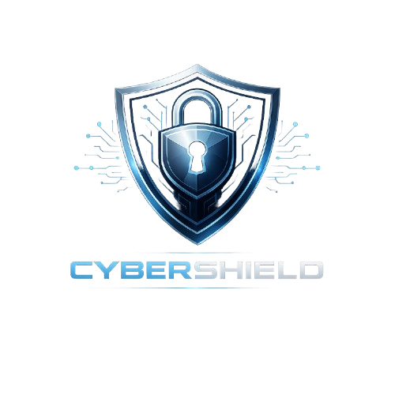

Pro firmy je kybernetická bezpečnost naprosto klíčová. Únik dat nebo napadení systému může způsobit velké finanční ztráty a poškození reputace. Naše služba nabízí komplexní ochranu firemní infrastruktury.
Zajišťujeme zabezpečení firemních sítí, pravidelné zálohování dat a monitorování systémů. Pomáháme také zaměstnancům pochopit základní principy bezpečnosti a předcházet chybám, které by mohly vést k útoku.
Naším cílem je zajistit, aby vaše firma fungovala bezpečně a bez výpadků způsobených kybernetickými hrozbami.
← zpět na služby